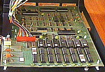
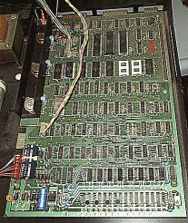
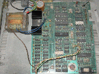
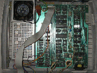

Commodore PET boards
(C) - André Fachat
Here follows a description of the 4 major board revisions used in the Commodore PET line of computers. Please note that each board number describes a range of different boards - but the differences within a number described here should be too small and too unimportant to mention.
Special thanks goes to William M. Levak for some of the details, esp. the hint with the programmable 2316 select line, that made it a lot more understandable.
Table of content
Board descriptions
#1: 2000 series, ca 1977/78, Max RAM - 8k, expansion board to 32k
This is the first and oldest board. The size of the ROMs was 2k, and the video RAM was as fast as the main memory. This meant that when the CPU accessed the video RAM the screen would show garbage for each used clock cycle - video "snow". Also there was no CRTC (Cathode Ray Tube Controller, short video controller) on the board, but all timing is done with discrete logic. Therefore there are two things built into this board:
- The video can be disabled, effectively blanking the video screen. The signal line used for that was PIA1 CA2. This line was also used for the (in the ROM unfinished) IEEE488 support.
- The screen "VIDON" signal (a line generated when the electron beam is supposed to do the vertical retrace) is fed to PIA1 CB1. This signal is used to generate a system interrupt for each video frame - this is different (in later models only?) for european and american models. The software checks the same line on VIA PB5. Only if the beam is on retrace the kernal writes something on the screen - this avoids the "snow" when accessing the screen when the electron beam is active.
The board does not have a piezo beeper for VIA shift register output to sound.
This board actually came in two flavours, one with the Commodore-specific ROM chips of the 6540 type (#1a), and one with the standard 2316 2k ROMs (#1b). When you look at the #1b schematics you may notice that some pairs of ROM sockets have exactly the same wiring. Simply speaking, using "normal" ROMs one would expect both sockets to react at the same time. And also A11 is connected to the sockets, but should not be needed for a 2k ROM. But the used 2316 have a chip select line at the place where the 2332 have the A11, and this line is programmable! So for one of the ROMs in such a pair the select line is low-active, selecting the lower half of the 4k, the other one gets it high-active for the upper part of the 4k. So you can even swap the two ROMs of such a pair. And when upgrading one can simply plug a 4k ROM in one of the sockets and leave the other one empty!
The layout of the board is (from the petfaq, pictures courtesy Bo Zimmermann):
2000 series(9" CRT)
IEEE user tape #2
+------####-####--##-+
! #
! #
! # exp
! # bus
! #
! #
! !
! (2k) ROMS !
! F F E D D C C !
! 8 0 0 8 0 8 0 !
! !
tape # RAM MEMORY !
#1 # !
+--------------------+
|
 |
#2: European 3000 and 9" 4000 series, ca 1979/80, Max RAM - 32k
This board is a considerable upgrade to the first one. The ROM size is 4k for one chip now (Except for the $E*** ROM, which is 2k. A11 is connected to the additional select line of the 2k chips (programmed as low-active, see above) as compared to the 4k, so it is only selected in the lower half, i.e. $E000-$E7FF. Putting a 4k ROM here gives a bus conflict in the I/O area. However there is a jumper to put the I/O area from $E8** to $88**, and then it would be feasible to use a 4k ROM. It seems CBM was looking for a way to get more ROM area, but probably found that moving the I/O to another location would break too many programs). Also the video RAM is faster so that the video access is done during the first half of the Phi2 CPU clock, while the CPU accesses the memory during the second half. It does not, however, add a CRTC controller and the piezo beeper. The VIDON signal still remains the same, but the screen can no longer be blanked by the PIA1 CA2 line.
The layout is (from the petfaq, pictures courtesy Bo Zimmermann):
3000 & 4000 series (9" CRT)
IEEE user tape #1
+------####-####--##-+
! #!
! #!
! #! exp
! ROMS #! bus
! F E D C A B 9 #!
! #!
! !
! !
! !
! !
! !
tape # RAM MEMORY !
#2 # !
+--------------------+
|
 |
From the layout of the I/O and expansion ports it can be seen that the board can be / has been used in the same cases as the older board - and this is the 9" case.
#3: 4000/8000 series, ca 1981. Adds a CRTC video controller Max RAM - 32k
This board finally adds a CRTC video controller and a piezo beeper for the VIA shift register output.
One other thing is that it replaced the VIDON line to generate the system interrupt with the vertical sync signal of the CRTC. The CRTC is able to address 16k of memory. In the PET only 2k are used and A0 is even generated by the 16 bit access to the video memory (The 80 cols CRTC has characters per line still set to 40), so the CRTC uses only 10 address lines. The two uppermost CRTC address lines have now been used for control purposes: The MA13 line is an additional line to the character ROM, so that you can switch to another set of characters, if available. The MA12 line is used to invert the video output completely, i.e. then the electron beam is on even on the flyback (horizontal and vertical retrace). I assume this was to compensate for different video electronics.
The ROM size is still 4k. Although the $E*** ROM is labeled 2316 (2k) in the schematics, A11 is still connected to the /CS line, and the pin is even described as A11 for the 2k chip :-) However, the other select line /SELE is now masked at $E8**, such that it is active even in $E900-$EFFF (as in older boards) but not $E8** -> I/O area size 256 byte only! But you only recognize this in a machine with a 4k $E*** ROM, as, unlike ususally, the 2k ROM is not mirrored but leaves open addresses in $E900-$EFFF.
This board actually came in different flavours:
- #3a as an early design could only be used for the for 80** series, i.e. it could only display 80 chars a line. So the first 12" models were all 80** machines.
- #3b is a later modification of the #3a board: This board could be modified for 40 columns and 80 columns video output! As such it has been sold in the 4000 series ("fat-40") and the 8000 series. There was an upgrade from 4000 to 8000 and it consisted of an additional 2k video RAM and some jumper setting on the board to shift address lines (probably some resoldering of a few chips, see next board). As can be seen from the layout the board has been made for a different case, namely the 12" edgy (one-piece) case. This board even came in different flavours (with minor artwork differences), and the latter have been called Universal Dynamic PET board.
Below are links to schematics for the old 8032 (#3a) as well as two flavours of the universal dynamic board.
The first 8032 board (#3a) introduced a little-known feature - the NOROM line. It was a connection from CPU pin 5 - that is unconnected in the 6502 - and the chip select lines for the ROMs. If you would pull this line low, the chips would ignore any read request. This allowed to build CPU adapters (to be put between the CPU and the board) that replaced the builtin ROM with other
memory mappings! This is in fact used by the SuperPET expansion and probably
also by the 8096 64k expansion board.
At the end of its production cycle it has also been used in the new separate keyboard cases, with turnable monitor. The problem was that it didn't fit into the casing so they had to provide extra wires to connect the board with the connector on the back. You can recognize this board by the real IEEE488 connector on the back, not the usual card edge connector.
For this board an expansion board was available that increased the available memory by 64k to 96k RAM. With the expansion board this is the first PET to sport memory management by the possibility to remap the upper 32k. The upgraded model is known as 8096 and although the ROM is the same as the 8032 (Basic 4) there is a BASIC extension (LOS 96) that uses this expansion memory (see also the 8x96 page).
Also available for this board was the SuperPET expansion board(s), to include a 6551 UART, 64k RAM (not compatible to the above extension) and a 6809 CPU with its own ROMs.
AT least the SuperPET extension uses the /NOROM line the disables
the ROM mapping. The SuperPET extension replaces the CPU with a special
board, with only few other connections to the main board. This #3 board
has the /NOROM line connected to an unused CPU pin, to make
it available to the SuperPET board.
The layout is (from the petfaq):
4000/8000 series (12" CRT)
IEEE user tape #1
+------####-####--##-+
! # # tape
! # # #2
! R exp bus # !
! A #!
! M 9 #!
! A #!
! M R B !
! E O C !
! M M D !
! O S E !
! R F !
! Y !
! spkr!
+--------------------+
|
#4: 4000/8000 board with 128k RAM, when? , with CRTC video controller
This board is a complete rebuild of the 8096, but using two banks of 64k dynamic RAM each that can be memory mapped as in the 8096. The only difference is that now even the video controller uses normal CPU memory (in the 128k RAM) for screen output, and it can access up to 8k for it! Therefore the region $8800-$9000 is also mapped with RAM. By setting jumpers on the board it is possible to remap some ROMs with the RAM underneath. See also the 8x96 documentation.
This board can be set to 40 or 80 chars per line (by resoldering two chips), but is in fact a 8296, used in 12" separate keyboard machines (I have yet to see a report for a 40 column machine with this board). Also the I/O area is only one page ($E800-$E8FF), and the area from $E900 to $EFFF is now used as ROM for nationalized editors.
The CRTC MA13 line is still used as additional character ROM address line, while MA12 is not connected anymore. Interestingly the RAM is accessed with 4 MHz, where during Phi2 low the video logic reads in two bytes to allow for 80 columns display, while during Phi2 high the CPU only does a single access.
The board now fits into the "round-edge", or "separate keyboard" PET case, with the extra keyboard connector to the front.
The layout is (from the petfaq):
8296 series (12" CRT)
IEEE user tape #1
+------####-####--##-+
! # # tape
! P s # # #2
! w p # !
! r l #!
! #!
! #!
! M M !
! E E !
! M M !
! O O !
! R R !
! Y Y !
! spkr !
+----------------###-+
keyboard
|
 |  |
{kind=link}
{kind=link}
Add-on boards
SuperPET
The SuperPET is a set of add-on boards (resp. a single add-on board) for the 8032. It has an own SuperPET page here.
8096 64k expansion
The 8096 was an extended 8032 PET - with an additional 64k memory expansion. In later versions the memory expansion was integrated into the 8296 model, which has an own 8x96 page.
Sorry, no link available
Links
Further links
Return to Homepage